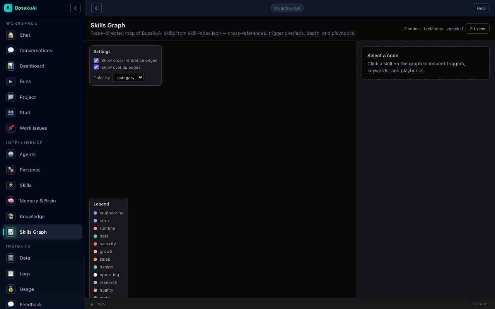
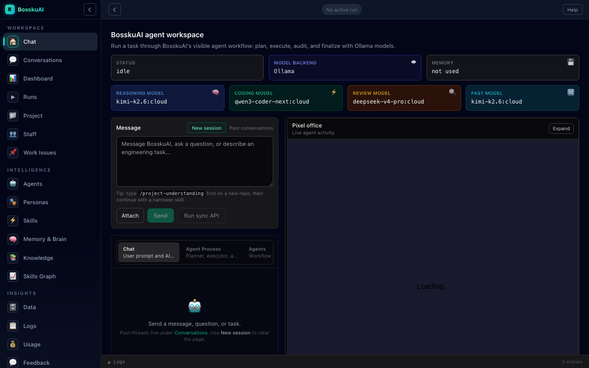
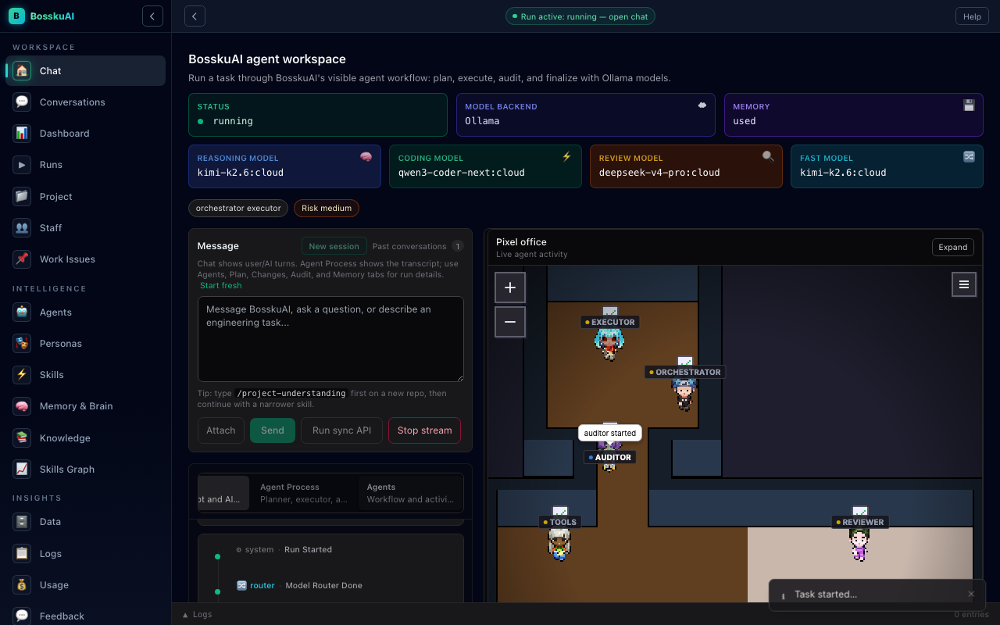
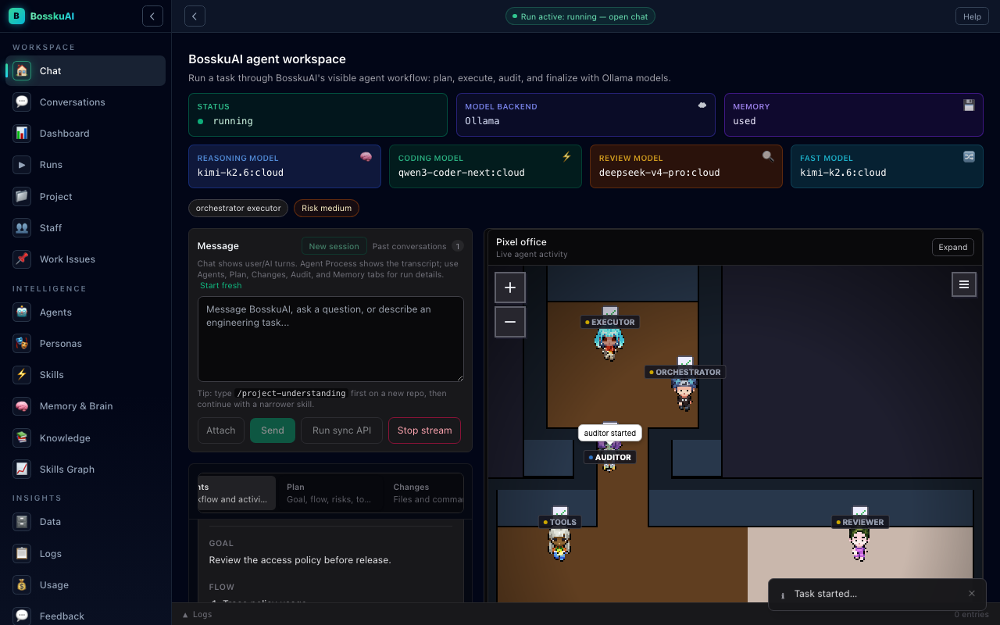
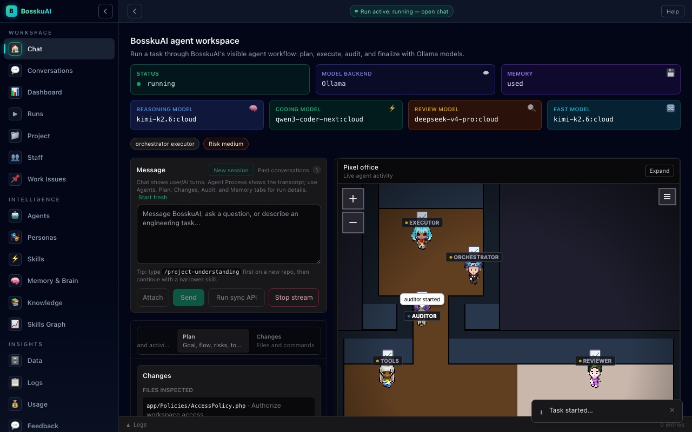
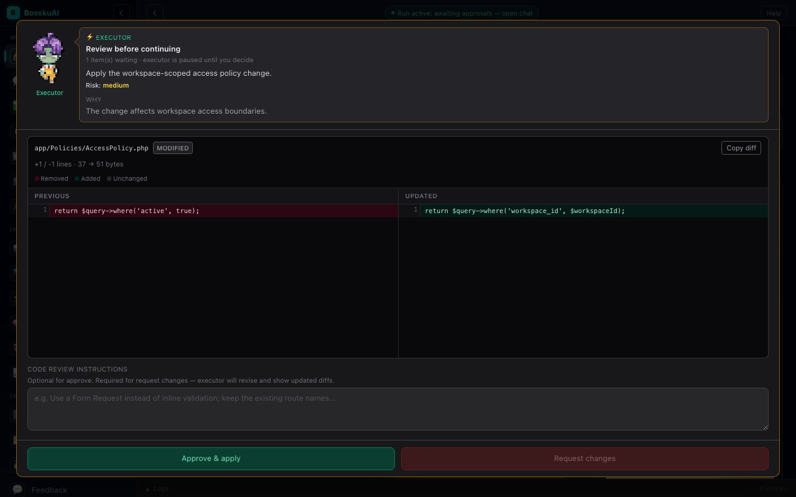
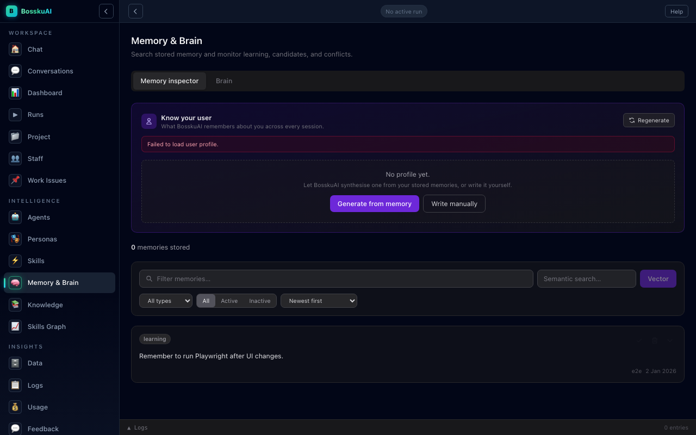
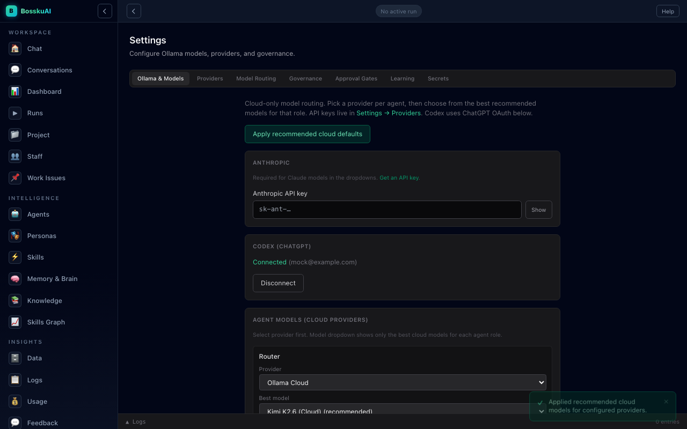
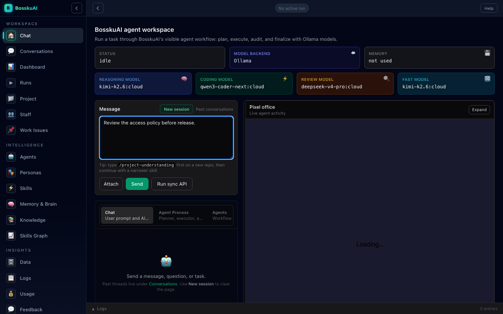

Skills Graph
Make focused expertise visible.

Workspace control
Type the task. Keep the work visible from the first decision.

Pixel Office
Planner, executor, auditor, and reviewer activity stays in view.

Plan workspace
Keep the goal, scope, risks, and checklist visible before changes begin.

Changes workspace
See the files, commands, and verification behind each change.

Audit and approval
Risky changes stop for review with the evidence in front of you.
Memory workspace
Carry the reasoning and project knowledge into the next run.
Built-in depth
Explore skills, memory, model roles, and review controls without leaving the workspace.

Make focused expertise visible.

Search the context that guides each run.

Set routing, audit, memory, and plan mode.

Your existing workspace
Plan the work. Review the evidence. Keep the context.